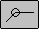
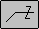

symbol modifier
Controls whether symbol modifiers are displayed.
In Field
Displays the symbol that shows that the weld is to be made in the field.

All AroundDisplays the symbol that shows that the weld is to be made all around the weld joint.

Z ModifierControls whether the Z modifier symbol is displayed. If the Z modifier is displayed, two additional boxes for text entry are displayed to the right of the Z modifier.